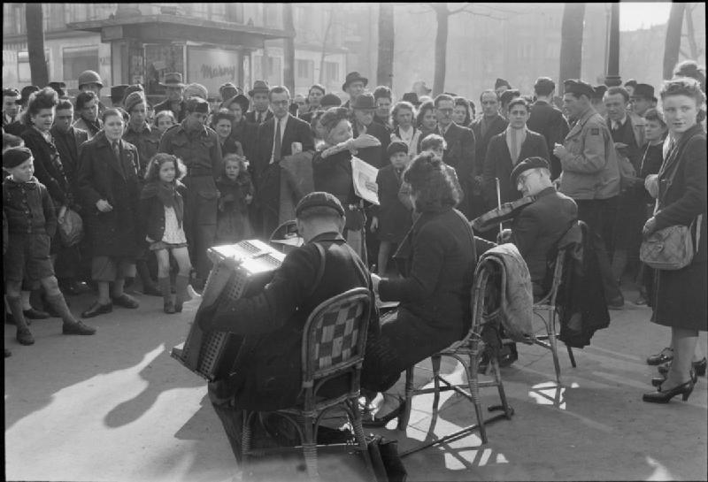
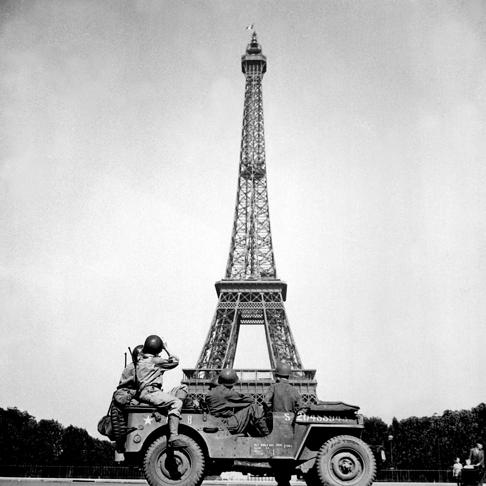
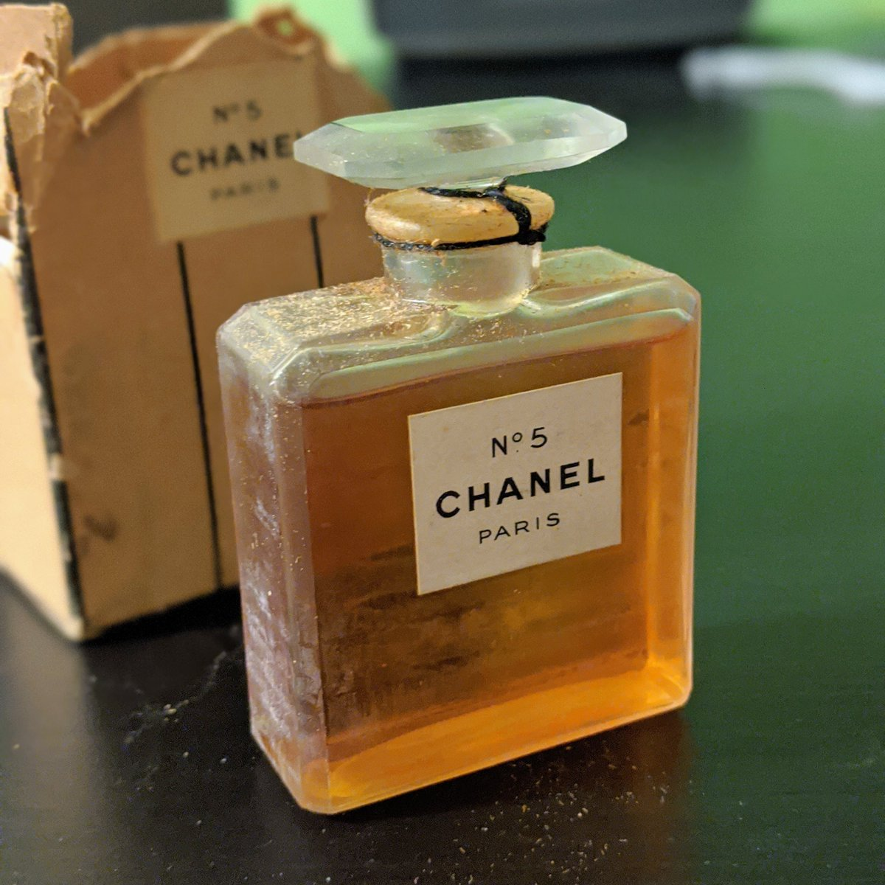

My grandmother died last Spring.
We mourn of course, but she lived to 100, saw and did amazing things, and the family has more a sense of respectful awe than anything else. In any case this is actually about a bottle of her perfume that came to me recently.
Chanel #5.
My grandfather was the copilot on a B-24 heavy bomber in WWII, flying from East Anglia to the heart of the third reich. He wrote to my grandmother regularly while he was there, and in September 1944 sent her a small package containing the bottle in question. Letters were scrubbed for operational details at the time, so his only explanation was
“I had some money in Paris so I bought some perfume for you.”
I’m sure this was confusing to my grandmother then. Paris? He was only ever supposed to have his feet on the ground in England.
Fast-forward to the present, and approaching the edge of living memory for that time, a few months ago I stumbled on an informal memoir by my grandfather’s CO. In it, the CO details how - on their way back from a raid on Germany - one of their four engines had blown out and forced the crew to make a sketchy landing in a just-liberated part of France:
“We made a good landing on the first third of the field. I put on the brakes, and we skidded all the way to the end . . . we taxied off the landing strip and got into a six by six truck that took us right to downtown Paris and let us out, no questions asked.”
“Here we were in the middle of Paris—unshaven, grubby, and in our flying clothes. But we didn’t care. Excited, we split up and explored the city that had been liberated just a week before.”
 Photo: “Life in Liberated Paris, Place de la Madeleine”
{kind=link}
This is the bit of detail my family had been missing. My grandfather, stumbling up the Champs-Élysées, among the joyous Parisians, maybe seeing the Eiffel Tower, happy to have lived through another mission.
 Photo: “4th U.S. Infantry Division in Paris”
{kind=link}
In all this, at some point he managed to gather his wits enough to realize he should probably buy my grandmother a gift. Perfume acquired (and how Chanel #5 was kept available throughout WWII is its own fascinating/sordid story), my grandfather returned to his squadron in England, and shipped the gift off to Philadelphia.
He was killed two months later. Given his own bomber command, his plane was shot down by enemy fighters over Hildesheim, Germany.
My grandmother raised my mother alone, never remarried, and never opened the bottle.

In the fog of that tragedy, it makes sense that my family never dug too deeply into how my grandfather acquired that bottle. Easier - maybe healthier - to try to forget. But I’m grateful that the artifacts of the story have come together now. Many never get this much detail from the past.
Big thanks to all the archivists, librarians, and historians out there who keep these pieces alive.